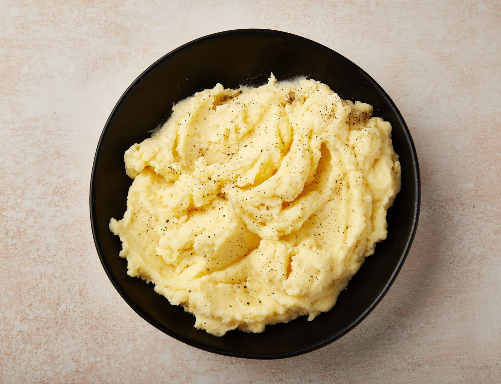

Mashed Potatoes

Feeds 4
- 1.5 lbs potatos
- 1 stick butter
- 1 cup milk
- salt and pepper
- Peel and cut potatoes into consistent sizes so they cook evenly. Top with water 1 inch over potatoes.
- Salt and bring water to boil over high heat.
- Reduce heat and boil 15 to 20 minutes or until potatoes are fork tender.
- Drain then add butter, milk, salt and pepper
- Mash with mixer or by hand with a potato masher.
- Enjoy immediately.